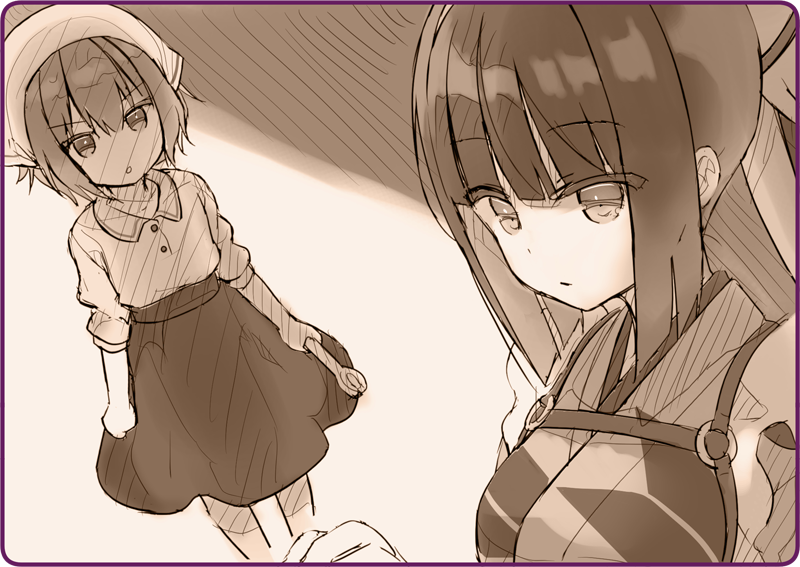

Thế giới bên ngoài nhuốm màu bạc của tuyết vẫn như vậy, luôn tỏa rạng dưới ánh Mặt Trời.
Đêm qua hơi lạnh, nên hẳn là tuyết lại rơi dày thêm rồi.
Đường chính trông như vừa được người ta dọn tuyết trước đó, vẫn còn hằn rõ những vệt bùn đất.
Tôi nhìn bản đồ và tìm đường đến nơi cần tới, hơi nước trắng xóa khẽ thoát ra từ cột ống khói sau lưng.
Nơi tôi đặt chân đến là một bến tàu… hay nói đúng hơn là một hải cảng quá sức khiêm nhường.
Cầu tàu đơn sơ, kho bãi thì bé tẹo. Ở đó có một bưu chính viên đội mũ lông đang nhàn nhã làm việc.
Khi được bắt chuyện, người đó nhìn tôi như thể của lạ. Có vẻ anh ta không thường gặp những Hình nhân Tự hành.
Bưu chính viên: “À, là nhận hàng nhỉ.”
Anh ta hiểu ngay lập tức.
Trong lúc tôi tháo tấm khăn gói tay nải đang trùm lên chiếc cặp sau lưng, anh ta lấy ra một bưu kiện.
Bưu chính viên: “Người phương Đông mang đồ kiểu lạ lùng thật.”
Nhân tiện, người Altaria thường đựng đồ bằng những cái xắc đan từ sợi gai dầu. Đối với tôi mà nói, như vậy có khi còn khó mang vác hơn.
Bưu chính viên: “Hai bên đấu súng được cả chục năm rồi, thế mà hòn đảo vẫn y xì thế này mới hay chứ.”
Bưu chính viên: “Chúng tôi tự cung tự cấp mà. Nếu phải nói có gì khác thường, thì chắc chỉ mỗi chuyện lâu lâu Hoàng Quân các cô lại tới đây thôi.”
Khác hoàn toàn với Mặt trận Tây Nam mà tôi từng thuộc về, quần đảo Helena nằm cách xa tiền tuyến và cũng chẳng phải vị trí chiến lược trọng yếu gì, chỉ đơn thuần là chuỗi đảo nông-ngư nghiệp nho nhỏ. Bởi thế mà Hoàng Quân mới tái thiết nơi đây thành một điểm nghỉ dưỡng.
Bưu chính viên: “Tôi chịu, có thì chắc cũng chỉ dùng để làm nông thôi.”
Anh bưu chính viên nói lấp lửng, cơ hồ muốn kích thích trí tò mò của tôi.
Bưu chính viên: “Cô không nên làm thế.”
Bưu chính viên: “Vì tính chất công việc nên tôi mới quen được… chứ dân đảo này chẳng ai tin tưởng người ngoài, nói gì đến người phương Đông. Hai bên không can hệ gì đến nhau là tốt nhất.”
Quả thật, đối với người dân trên đảo thì chúng tôi là những kẻ xa lạ đến từ vùng viễn đông xa xôi muôn trùng. Rốt cuộc thì, chúng tôi tới đây nhằm xâm chiếm đại lục này mà.
Gói tay nải xong xuôi, tôi cúi đầu và rời khỏi đó.
＊ ＊ ＊
Trên đường trở về, tôi thả bộ dọc theo bờ biển.
Tôi có thể quan sát thấy thấp thoáng hình bóng Đại lục phía bờ bên kia. Thoạt trông thì có vẻ như chỉ cần nhảy lên thuyền là tới được nơi đó, song chuyện chẳng hề đơn giản như thế bởi dòng hải lưu rất mạnh. Nói vậy thôi, chứ sóng nước trước mắt tôi trông thật hiền hòa, thậm chí đám chim biển còn đang chao liệng trên bầu trời kia mà.
Tuy thế, sự yên bình của hòn đảo này thuộc về dân đảo, không phải cho những người như chúng tôi. Một thiên đường xa vời… nghĩ như vậy, chẳng hiểu sao trong lòng tôi lại cảm thấy khó chịu.
Đột nhiên, tôi trông thấy một cơ thể máy móc màu cỏ úa to cỡ một chiếc xe tải, và cấu trúc của nó gợi tôi nhớ tới loài giáp xác. Nó có bốn chân… một Hình nhân Cơ khí phục vụ nông nghiệp. Nhìn nó cứ như đã được sử dụng trong một thời gian dài, nên có thể là đồ cũ xài rồi sau đó đem bán của Hoàng Quốc. Xuân sắp tới rồi, chắc họ đang mang nó ra chạy thử…
Từ chiếc ống khói kia phun ra những đợt khói đen sì, hẳn là do nhiên liệu không được đốt trơn tru. Là trục trặc động cơ hay do cơ quan lý luận không hoạt động đúng cách?
Tôi kiểm tra số mẫu. Nếu là mẫu này thì có lẽ tôi xử lý được. Tôi có thể kết nối cơ quan lý luận của cả hai và tìm hiểu nguyên do. Nghĩ đoạn, tôi nhẹ nhàng chạm vào thân thể ấy…
Sau một khắc thoáng rung do kết nối, tầm nhìn của tôi nhấp nháy một màu đỏ.
Tôi thử điều khiển Hình nhân Cơ khí như vẫn làm hồi còn ra trận.
Lồng ngực tôi có chút bỏng rát như bị đốt cháy.
Tôi vội rụt tay lại. Nhiệt độ cơ thể nhân tạo tăng mạnh. Ngay sau đó, chiếc cặp tôi đeo sau lưng liên tục phun hơi nước để thúc đẩy chất làm mát lưu thông.
Tôi nhìn vào bàn tay mình.

Cô bé: “Làm gì thế hả?!”
Tôi giật mình, liền quay đầu lại.
Đứng đằng xa là một cô bé tầm mười tuổi với dụng cụ trên tay.
Cô bé: “Đừng có đụng vào nó!”
Cô bé: “Hình nhân Chiến đấu của Hoàng Quốc làm gì ở đây?!”
Cô bé nắm chặt lấy dụng cụ, tỏ ý rằng nếu cần thiết thì em sẽ dùng thứ này để bảo vệ Hình nhân Cơ khí kia.
Dân đảo này chẳng ai tin tưởng người ngoài, nói gì đến người phương Đông— tôi chợt nhớ lại những gì anh bưu chính viên nói.
Vậy nên, tôi cũng quyết định tránh đụng chạm với bọn họ.
Tôi rụt tay khỏi Hình nhân Cơ khí nọ và tạo khoảng cách với nó.
Cô bé kia vẫn đề cao cảnh giác mà trèo lên Hình nhân kia và cố gắng sửa nó. Tuy nhiên, tay nghề lại cực kỳ vụng, chẳng có triển vọng sửa được cái gì cả.
Cứ để yên cô bé như vậy là tốt nhất. Không nên tạo những xích mích không cần thiết với dân địa phương. Tất cả những gì tôi cần làm là lặng lẽ rời khỏi nơi này và đưa lại gói hàng cho chủ nhân.
Sau khi bước đi trên con đường tuyết được một lúc, tôi chợt ngoái đầu ra sau.
Khói đen vẫn chưa hết bốc lên.
Do dự giây lát, cuối cùng tôi cũng quyết định quay trở lại.
Cô bé: “...... Tôi không cần Hình nhân Chiến đấu giúp đỡ!”
Cô bé: “Hình nhân hầu gái…?”
Những lời tôi nói nghe có vẻ kỳ cục sao đó, khiến cô bé không khỏi nghi ngờ.
Cô bé: “Hả…?”

 “Là nơi này chăng…”
“Là nơi này chăng…”